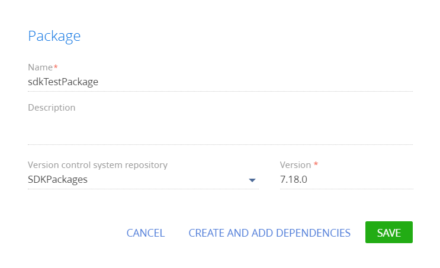
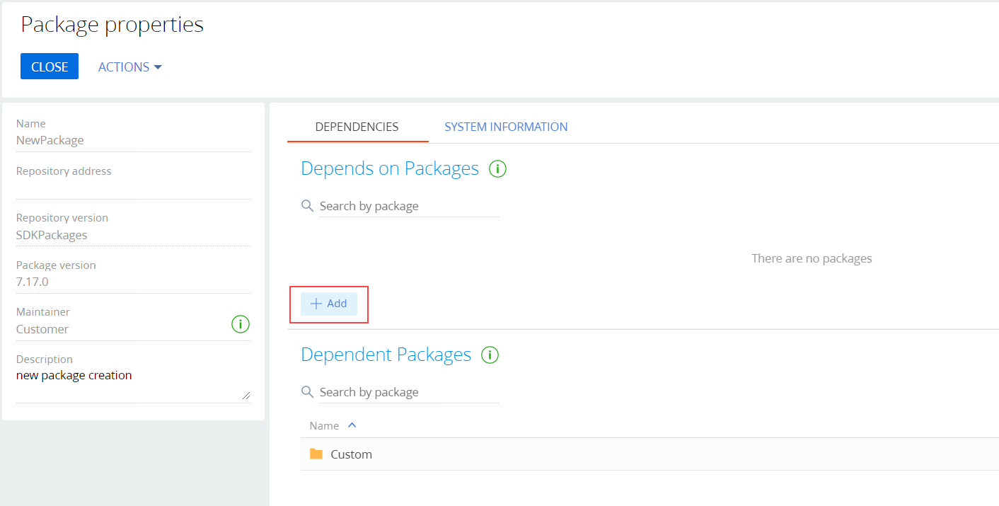
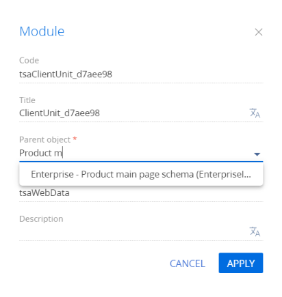
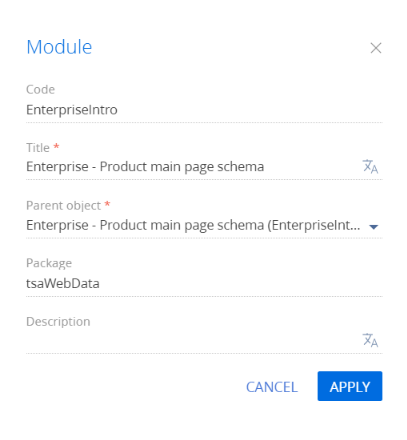

Разработка функциональности пользовательского решения является одним из шагов общей последовательности разработки приложений для Marketplace.
Приложение для Creatio Marketplace является проектным решением, расширяющим возможности базовых продуктов Creatio и имеющее дополнительную бизнес-ценность. Поэтому разработка приложения для Marketplace практически ничем не отличается от разработки обычного проектного решения.
Поскольку приложение для Creatio Marketplace является проектным решением, предоставляемым сторонним пользователям, то необходим механизм установки этого решения в пользовательские приложения. В Creatio этот механизм реализован с помощью пакетов. Пакет Creatio — это совокупность конфигурационных элементов, которые реализуют определенный блок функциональности.
Количество и состав пакетов, реализующих приложение для Creatio Marketplace зависит от сложности функциональности, заложенной в приложение. Например, для вызова стороннего сервиса с существующей страницы записи достаточно заместить одну или несколько схем, сгруппировав их в одном пользовательском пакете. А для создания нового раздела Creatio, реализующего сложную функциональность, необходимо разработать уже несколько десятков новых схем и модулей.
1. Реализовать веб-сервис
В зависимости от назначения, веб-сервис может быть реализован разными способами, с помощью различных языков программирования и на разных платформах.
Исходя из условий кейса, необходим простейший, так называемый, микросервис. Для его реализации можно использовать одну из площадок, предоставляющую возможность создания микросервисов, например, open-source проект https://hook.io.
После регистрации пользователя площадки и входа в систему отобразится страница управления микросервисами, на которой можно создать новый Web-сервис (1).
После создания нового сервиса необходимо на странице свойств задать имя конечной точки доступа к сервису, выбрать язык программирования, на котором будет написан исходный код сервиса (1), и добавить исходный код сервиса (2).
После сохранения исходного кода (3) сервис становится сразу же доступен для использования. Адрес конечной точки https://hook.io/academy-creatio-com/creatiohello.
Исходный код сервиса представляет собой функцию, которая на основе параметра name HTTP-запроса формирует строку приветствия и отправляет ее в качестве ответа клиентскому приложению. Полностью исходный код микросервиса представлен ниже.
2. Создать пользовательский пакет
- Перейдите в дизайнер системы по кнопке
 .
. - В блоке Конфигурирование разработчиком (Admin area) перейдите по ссылке Управление конфигурацией (Advanced settings).
- В области работы с пакетами нажмите кнопку
 .
. - Заполните свойства пакета:
- Название (Name) — название пакета (обязательное свойство). Не может совпадать с названием существующих пакетов.
- Описание (Description) — описание пакета, например, расширенная информация о функциональности, которая будет реализована в пакете.
-
Хранилище системы контроля версий (Version control system repository) — название хранилища системы контроля версий, в котором будут фиксироваться изменения пакета (обязательное свойство). Хранилища, которые находятся в перечне хранилищ конфигурации, но не помечены как активные, не попадут в выпадающий список доступных хранилищ.
- Версия (Version) — версия пакета (обязательное свойство). Версия пакета может содержать цифры, символы латинского алфавита и знаки "." и "_". Добавляемое значение должно начинаться с цифры или буквы. Все элементы пакета имеют ту же версию, что и сам пакет. Указываемая версия пакета не обязательно должна совпадать с фактической версией приложения.
 -
Чтобы текущий пакет наследовал функциональность приложения, необходимо определить зависимости пакета.
Чтобы добавить зависимости пакета:
- В карточке пакета нажмите кнопку Создать и добавить зависимости (Create and add dependencies).
- На вкладке Зависимости (Dependencies) в детали Зависит от пакетов (Depends on packages) установите необходимые зависимости. Чтобы текущий пакет наследовал всю функциональность приложения, в качестве родительского пакета необходимо выбрать пакет, который в иерархии находится следующим после пакета Custom.

3. Создать замещающую схему
Главное меню приложения Creatio формируется в нескольких схемах модели представления, образующих иерархию наследования:
- Базовая схема главной страницы (BaseIntroPageSchema, пакет UIv2) — родительская схема модели представления, в которой формируются основные контейнеры главной страницы. Добавляет в модель представления разделение на левую и правую части, панели отображения видео и панель ссылок на страницы социальных сетей.
- Схема главного меню для базового продукта (SimpleIntro, пакет UIv2) — наследуется от BaseIntroPageSchema. Добавляет на главную страницу ссылки блоков Базис, Аналитика и Настройка.
- Схема главного меню для продукта Enterprise (EnterpriseIntro, пакет SalesEnterprise) — наследуется от SimpleIntro. Добавляет в левую часть меню дополнительные ссылки секции Базис, а также ссылки секции Продажи. Дополнительно переопределяет ссылку на видеоролик.
Для внесения пользовательских изменений в главное меню продукта Sales Enterprise необходимо заместить схему EnterpriseIntro и реализовать в ней дополнительную функциональность.
Чтобы создать замещающую схему:
- Перейдите в раздел Конфигурация (Configuration) и выберите пользовательский пакет, в который будет добавлена схема.
- На панели инструментов реестра раздела нажмите Добавить —> Замещающая модель представления (Add —> Replacing view model).
/scr_add_replacing_module.png)
-
В дизайнере схем выберите родительский объект.
Чтобы модуль замещал раздел или страницу, в обязательном свойстве Родительский объект (Parent object) схемы укажите заголовок той базовой схемы модели представления, которую необходимо заместить. Для этого в поле Родительский объект (Parent object) свойств замещающей схемы необходимо начать вводить заголовок "Схема главного меню для продукта Enterprise" ("Enterprise - Product main page schema (EnterpriseIntro)") и выбрать нужное значение из выпадающего списка.
После подтверждения выбранного родительского объекта остальные свойства будут заполнены автоматически.
Для применения заданных свойств нажмите Применить (Apply).
4. Реализовать функциональность
Для реализации пользовательской функциональности в созданную схему необходимо добавить исходный код.
Чтобы отобразить результат вызова пользовательского микросервиса на странице главного меню, в схему модели представления в массив модификаций diff необходимо добавить конфигурационные объекты для контейнера и содержащейся в контейнере надписи.
Для реализации необходимой пользовательской логики необходимо разработать метод вызова микросервиса SetHelloAttribute(), в котором будет использован JavaScript-объект XMLHttpRequest. Этот метод необходимо вызвать при загрузке страницы. Для этого необходимо переопределить метод родительской схемы Init(), в котором вызвать SetHelloAttribute(). Результат вызова запроса к микросервису можно получить в Callback-функции, присвоенной свойству onreadystatechange объекта XMLHttpRequest. Однако вследствие асинхронности выполнения запроса, результат необходимо сохранить в атрибуте HelloAttribute схемы. Сам же атрибут необходимо связать со свойством caption надписи, отображающей запрос.
Исходный код схемы модели представления главного меню представлен ниже.
После сохранения схемы необходимо обновить в браузере страницу главного меню приложения. На ней отобразится результат запроса к микросервису creatiohello.